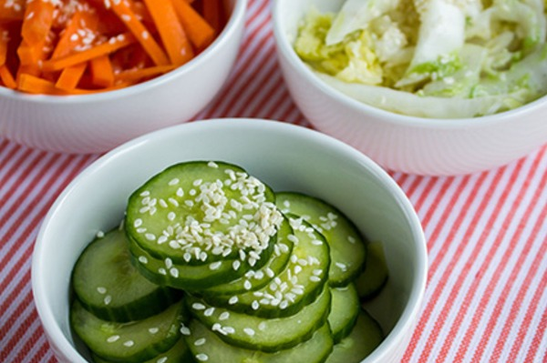

Tsukemono

Description
Tsukemono (漬物, literally "pickled things") are Japanese preserved vegetables usually pickled in salt. They are served with rice as an okazu (side dish), with drinks as an otsumami (snack), as an accompaniment to or garnish for meals.
These Japanse pickles are also referred to as konomono (香の物), oshinko (御新香) or okōkō (御香々), all carrying the meaning of "fragrant dish" in Japanese. The ko or kō (香) portion in these names literally means "fragrant", and the term was used as a nyōbō kotoba or "woman's word" for miso in reference to the smell.
Ingredients
- 1 cucumber, sliced into rounds
- 75 g Chinese cabbage, thinly sliced
- 12 g salt
- 350 ml unseasoned rice vinegar
- 60 g Granulated Sugar
- 10 g) sesame seeds, toasted
Preparation
- Wash and prepare all of your vegetables, then place each vegetable in its own shallow dish or bowl.
- Slice the cucumber into thin rounds, julienne the carrots (cut them into thin sticks), and thinly slice the Chinese cabbage.
- Distribute the salt among all three vegetables, making sure to mix it into the vegetables. Set them aside and allow them to sit for 2 - 3 hours, then drain any water that collects.
- In a large measuring cup, whisk together the rice vinegar and sugar until it dissolves completely.
- Pour the vinegar mixture over all of the vegetables, making sure to distribute it as evenly as you can. Don't worry if the vegetables are not completely covered.
- Let the vegetables pickle in the vinegar mixture for 2 hours, mixing them every half hour or so to ensure the the vegetables are evenly pickled.
- Serve the pickled vegetables with a sprinkling of sesame seeds and serve immediately.
Back